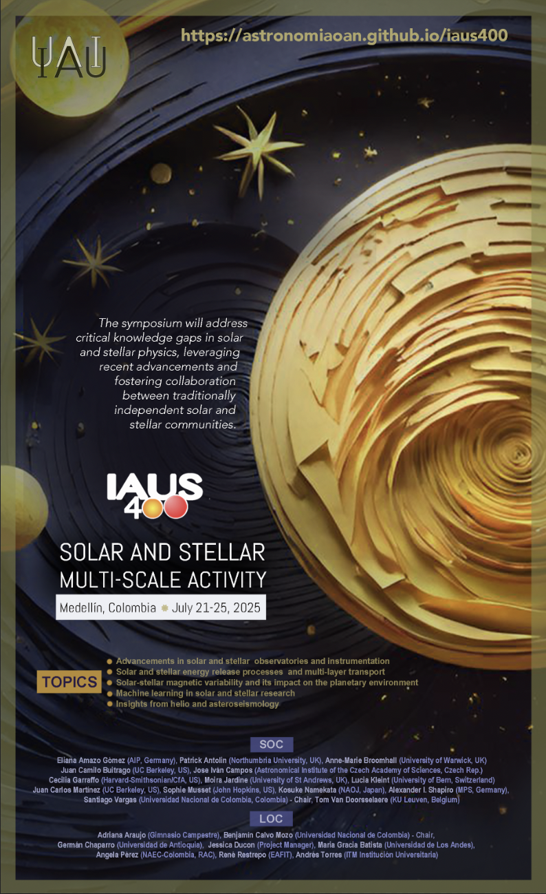

Actividad Solar y Estelar a Múltiples Escalas
Simposio 400 de la Unión Astronómica Internacional
2025
2025
Medellín
21-25 de Julio
21-25 de Julio

Reserva tu calendario!
El simposio abordará brechas críticas de conocimiento en física solar y estelar, aprovechando avances recientes y fomentando la colaboración entre las comunidades solar y estelar tradicionalmente independientes. El Comité Científico Organizador está compuesto por expertos de instituciones reconocidas mundialmente, asegurando una exploración diversa y completa de la actividad solar y estelar a múltiples escalas. El simposio se alineará estratégicamente con avances cruciales en misiones solares e instrumentación terrestre, ofreciendo una plataforma oportuna para el intercambio de conocimientos. El programa abarcará temas diversos, incluyendo observatorios, procesos de liberación de energía, variabilidad magnética, aprendizaje automático y helio/asteroseismología, garantizando una perspectiva integral y colaborativa.
Comité Científico
Eliana Amazo Gómez (AIP, Germany)
Patrick Antolin (Northumbria University, UK)
Anne-Marie Broomhall (University of Warwick, UK)
Juan Camilo Buitrago (UC Berkeley, US)
Jose Iván Campos (Astronomical Institute of the Czech Academy of Sciences, Czech Rep.)
Hebe Cremades (CONICET, Universidad Tecnológica Nacional, Argentina)
Cecilia Garraffo (Harvard-Smithsonian/CfA, US)
Moira Jardine (University of St Andrews, UK)
Lucia Kleint (University of Bern, Switzerland)
Juan Carlos Martínez (UC Berkeley, US)
Sophie Musset (JHUAPL, US)
Kosuke Namekata (NAOJ, Japan)
Alexander I. Shapiro (MPS, Germany)
Santiago Vargas (Universidad Nacional de Colombia, Colombia) - Chair
Tom Van Doorsselaere (KU Leuven, Belgium)
Patrick Antolin (Northumbria University, UK)
Anne-Marie Broomhall (University of Warwick, UK)
Juan Camilo Buitrago (UC Berkeley, US)
Jose Iván Campos (Astronomical Institute of the Czech Academy of Sciences, Czech Rep.)
Hebe Cremades (CONICET, Universidad Tecnológica Nacional, Argentina)
Cecilia Garraffo (Harvard-Smithsonian/CfA, US)
Moira Jardine (University of St Andrews, UK)
Lucia Kleint (University of Bern, Switzerland)
Juan Carlos Martínez (UC Berkeley, US)
Sophie Musset (JHUAPL, US)
Kosuke Namekata (NAOJ, Japan)
Alexander I. Shapiro (MPS, Germany)
Santiago Vargas (Universidad Nacional de Colombia, Colombia) - Chair
Tom Van Doorsselaere (KU Leuven, Belgium)
Comité
Organizador
Local
Adriana Araujo (Gimnasio Campestre)
Benjamín Calvo Mozo (Universidad Nacional de Colombia) - Chair
Germán Chaparro (Universidad de Antioquia)
Jessica Ducon (Project Manager)
Maria Gracia Batista (Universidad de Los Andes)
Angela Perez (NAEC-Colombia OAE)
René Restrepo (EAFIT)
Andrés Torres (ITM Institución Universitaria)
Benjamín Calvo Mozo (Universidad Nacional de Colombia) - Chair
Germán Chaparro (Universidad de Antioquia)
Jessica Ducon (Project Manager)
Maria Gracia Batista (Universidad de Los Andes)
Angela Perez (NAEC-Colombia OAE)
René Restrepo (EAFIT)
Andrés Torres (ITM Institución Universitaria)
TOPICS
Avances en Observatorios Solares y Estelares e Instrumentación
Explora los últimos avances tecnológicos en observatorios solares y estelares, incluyendo misiones como el Observatorio de Dinámica Solar (SDO), el Espectrógrafo de Imágenes de la Región de Interfase (IRIS), HINODE, la Sonda Solar Parker, el Orbitador Solar, DKIST, GREGOR, la Torre Solar Sueca (SST), el Nuevo Telescopio Solar (NST) y NVST. Discute cómo estos avances contribuyen a una comprensión más profunda de las atmósferas solares y estelares, así como de sus estructuras internas.
En el ámbito estelar, las observaciones están alcanzando el punto de comparación solar, en algunos casos con una mayor resolución temporal y, en particular, espectral. El futuro es prometedor para las observaciones estelares, con la llegada de instrumentos de alta resolución como el espectrógrafo ANDES en el Telescopio Extremely Large Telescope (E-ELT) de 39 m, o el instrumento G-CLEF en el Telescopio Gigante Magallanes (GMT) de 25.4 m.
Procesos de Liberación de Energía Solar y Estelar y Transporte Multicapa
Investigar los complejos procesos que impulsan la producción y el transporte de energía en las atmósferas solares y estelares. Explora los fenómenos de transporte en múltiples capas, incluyendo la conversión de la energía del campo magnético a pequeña y gran escala que conduce al calentamiento coronal y de las erupciones solares, ondas y flujos desde la fotosfera hasta la corona interna y extendida. Discute cómo estos procesos afectan el equilibrio energético general de las estrellas y sus entornos.
Variabilidad Magnética Solar-Estelar
y su Impacto en el Entorno Planetario
y su Impacto en el Entorno Planetario
El análisis de la variabilidad magnética solar y estelar es un requisito previo para comprender adecuadamente el comportamiento y la evolución de los sistemas estelares en su totalidad. La interacción de fenómenos a pequeña escala y sus efectos en el comportamiento magnético a gran escala aún no se entiende bien. Los eventos transitorios energéticos solares y estelares, el bombardeo de partículas asociado, los flujos magnetizados y los vientos deben tenerse en cuenta para una caracterización coherente de las condiciones de habitabilidad. Los hallazgos más avanzados en estos temas principales fomentarán una exploración integral del sistema Sol-Tierra, así como de las interacciones estelar-exoplanetarias.
Aprendizaje Automático
en la Investigación Solar y Estelar
en la Investigación Solar y Estelar
Explorar la aplicación de técnicas de aprendizaje automático en la investigación solar y estelar. Discute cómo la detección automática de características, el análisis de datos y el desarrollo de algoritmos con significado físico están revolucionando la comprensión de problemas complejos en la física solar y estelar. Destaca el papel del aprendizaje automático en el manejo de grandes conjuntos de datos generados por instrumentos avanzados.

Perspectivas de la
Heliosismología y Astrosismología
Heliosismología y Astrosismología
Obtener información a partir de las técnicas de helioseismología y astrosismología, que proporcionan datos sobre los interiores de las estrellas. Discute el uso generalizado de la helioseismología en la comunidad solar y su relevancia para comprender fenómenos a gran y pequeña escala. Explora cómo la astrosismología contribuye a una conexión más estrecha entre los campos solar y estelar, ayudando a entender la generación de diversos fenómenos desde el interior estelar. Examina los desarrollos recientes en la comprensión de los procesos dinámicos que gobiernan la generación del campo magnético tanto a escala global como local.
Fechas Importantes
21 de julio de 2024: Primer anuncio
21 de octubre de 2024: Segundo anuncio
21 de octubre de 2024: Apertura de envío de resúmenes
21 de enero de 2025: Apertura de registro
21 de enero de 2025: Fecha límite para IAU Travel Grants
21 de enero de 2025: Fecha límite para envío de resúmenes (oral)
21 de marzo de 2025: Fecha límite para envío de resúmenes (póster)
21 de marzo de 2025: Comunicación de contribuciones orales seleccionadas y becas otorgadas
21 de abril de 2025: Comunicación de contribuciones póster seleccionadas
21 de abril de 2025: Fecha límite para registro anticipado
21 de mayo de 2025: Fecha límite de registro
21-25 de julio de 2025: Simposio IAU 400 en Medellín
21 de agosto de 2025: Fecha límite para envío de trabajos para las memorias
21 de octubre de 2024: Segundo anuncio
21 de octubre de 2024: Apertura de envío de resúmenes
21 de enero de 2025: Apertura de registro
21 de enero de 2025: Fecha límite para IAU Travel Grants
21 de enero de 2025: Fecha límite para envío de resúmenes (oral)
21 de marzo de 2025: Fecha límite para envío de resúmenes (póster)
21 de marzo de 2025: Comunicación de contribuciones orales seleccionadas y becas otorgadas
21 de abril de 2025: Comunicación de contribuciones póster seleccionadas
21 de abril de 2025: Fecha límite para registro anticipado
21 de mayo de 2025: Fecha límite de registro
21-25 de julio de 2025: Simposio IAU 400 en Medellín
21 de agosto de 2025: Fecha límite para envío de trabajos para las memorias
Lugar
del
Evento
El evento se llevará a cabo en el Auditorio Fundadores, uno de los principales espacios para eventos en el campus de la Universidad EAFIT, ubicado en el corazón de Medellín, Colombia. Este moderno auditorio está equipado con sistemas de audio y visuales de última generación, asientos cómodos para una gran audiencia, y un diseño elegante que crea un ambiente acogedor para conferencias, presentaciones y eventos culturales.
Programa
en
Construcción
El programa detallado del simposio estará disponible en los próximos meses. Lo actualizaremos continuamente a medida que recibamos y revisemos las contribuciones aceptadas. Esta liberación gradual asegurará que los asistentes tengan la información más actualizada y completa sobre las sesiones, ponentes y actividades planificadas. Manténgase atento a las actualizaciones y consulte regularmente para ver las últimas incorporaciones a nuestra emocionante programación.
Regístrate
para
IAUS400
Envíe su resumen, regístrese para el simposio y solicite becas para estudiantes. No pierda la oportunidad de presentar su investigación, participar en las discusiones y asegurar opciones de alojamiento convenientes durante el Simposio IAU 400, que se llevará a cabo del 21 al 25 de julio de 2025 en Medellín, Colombia.
¡Manténgase atento para más actualizaciones!
¡Manténgase atento para más actualizaciones!
Publicación
de
Memorias
Las memorias del simposio IAUS400 se publicarán en la Serie de Conferencias de la IAU, a cargo de Cambridge University Press (CUP), en febrero de 2026.
Para asegurar que sus contribuciones sean incluidas, todos los trabajos deben ser enviados antes del 15 de agosto de 2025. Esta fecha límite es crucial para los procesos de revisión, edición y maquetación. Desafortunadamente, no se aceptarán envíos después de esta fecha.
La ventana de envío estará abierta hasta el 20 de agosto de 2025.
¡Esperamos contar con sus valiosas contribuciones!
¡Esperamos contar con sus valiosas contribuciones!
Patrocinadores
Observatorio Astronómico Nacional de Colombia
Academia Colombiana de Ciencias Exactas, Físicas y Naturales
Universidad EAFIT
ITM – Institución Universitaria
Dyna Sun Network
Biblioteca Luis Ángel Arango
Corporación C-Caldas
Red de Astronomía de Colombia
Academia Colombiana de Ciencias Exactas, Físicas y Naturales
Universidad EAFIT
ITM – Institución Universitaria
Dyna Sun Network
Biblioteca Luis Ángel Arango
Corporación C-Caldas
Red de Astronomía de Colombia
Contacto
Encuéntranos aquí
¡Queremos mantenernos en contacto contigo!
Síguenos en nuestras redes sociales
#IAUS400
Síguenos en nuestras redes sociales
#IAUS400